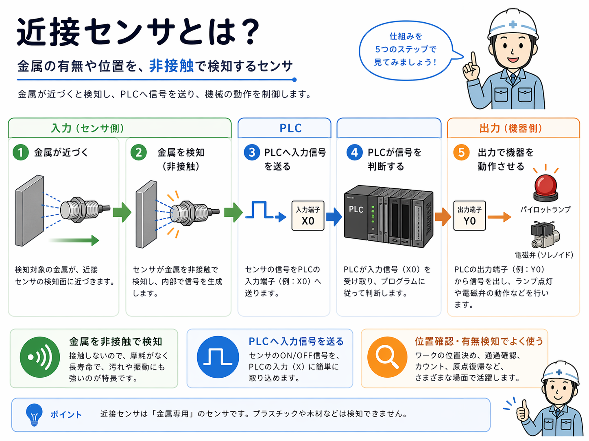
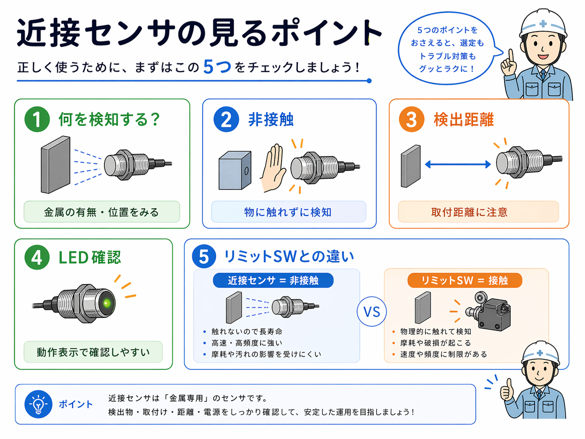

向いている人
- 近接センサの基本を現場目線で知りたい人
- PLC入力との関係をやさしく整理したい人
- リミットスイッチとの違いを知りたい人
近接センサとは、対象物がセンサの近くまで来たことを非接触で検知する入力機器です。工場設備や自動機では、ワークの有無確認、シリンダの位置確認、部品の到達確認などでよく使われます。
スイッチのように物が直接当たって動くのではなく、距離や材質の条件で反応するのが特徴です。現場では「接触しないで状態を見る入力」と考えるとイメージしやすいです。
近接センサは、対象物が近づいたことを検知して信号を出します。機械的に押されなくても反応するので、摩耗しにくく、繰り返し検出に向いています。
近接センサには種類がありますが、現場でよく見るのは金属を検知するタイプです。金属のワークやブラケットなどがセンサの検知範囲に入ると、センサがONになり、PLCへ入力信号が送られます。
つまり流れとしては、物が近づく → センサが検知する → PLC入力が変わる → 次の動作につながるという形です。

何を検知するかを確認します。近接センサの種類によって、金属を見ているのか、別の物を見ているのかが変わります。
どのくらい近づいたら反応するかを見ます。取り付け位置がずれると、反応しない原因になります。
物が当たらなくても反応するので、接触式のスイッチと見方が違います。物理的な押し込みは基本ありません。
センサ本体のLEDで検知状態を確認できることが多いです。現場での切り分けに役立ちます。
近接センサは単体で完結するのではなく、PLCの入力信号として使われることが多いです。センサがONになると、PLC側の入力点がONになり、ラダーの条件として使われます。
そのため、現場で不具合を見る時は「センサ本体が反応しているか」だけでなく、「PLCにちゃんと入力が届いているか」まで確認することが大切です。
| 見る場所 | 確認すること | よくある見方 |
|---|---|---|
| 現物側 | 対象物が近づいているか、センサLEDが反応しているか | 取付位置、距離、対象物の有無 |
| 配線側 | センサの出力がPLCまで来ているか | 断線、端子ゆるみ、電源供給、配線間違い |
| PLC側 | 入力点がON/OFFしているか | GX Works3などでX入力を確認 |
センサのLEDは光っているのにPLC入力が変わらない場合は、配線や入力ユニット側を疑います。逆にPLC入力だけを見て現物の距離や取付ズレを見落とさないことも大切です。
近接センサは見た目がシンプルですが、実際には確認するポイントがいくつかあります。対象物、距離、反応ランプ、配線、PLC入力までを流れで見ると、状態をつかみやすくなります。

まず、近接センサがどの対象物を見ているのかを確認します。対象物がズレているだけで反応しないことがあります。
センサと対象物の距離が遠すぎると反応しません。取り付け位置やブラケットのズレも確認します。
センサの反応LEDは、最初の確認ポイントです。LEDが反応しないなら、対象物や距離、電源から見ます。
LEDが変わっていてもPLC入力が変わらなければ、配線や入力側の確認が必要です。

先輩近接センサは「光ってるか」「何を見てるか」「PLC入力が変わるか」を順番に見ると整理しやすいよ。

後輩いきなり配線だけ見るんじゃなくて、まずは対象物とLEDから見るといいんですね。
近接センサとよく比較されるのがリミットスイッチです。どちらも位置確認や到達確認で使われますが、検知の考え方が違います。
| 項目 | 近接センサ | リミットスイッチ |
|---|---|---|
| 検知方法 | 非接触で検知 | 接触して検知 |
| 見るポイント | 距離、対象物、LED、配線 | 当たり方、押し込み、接点、戻り |
| よくある用途 | ワーク有無、位置確認、シリンダ位置 | 端位置、原位置、扉やカバー確認 |
| 特徴 | 摩耗しにくい | 構造が分かりやすい |
近接センサは「距離と対象物」を見る機器で、リミットスイッチは「当たり方と接点」を見る機器です。名前が違うだけでなく、現場での確認ポイントも変わります。
近接センサは見た目がシンプルなので、なんとなく見てしまいがちですが、いくつか間違えやすいポイントがあります。
本来見たい部品ではなく、近くの金属ブラケットに反応していることがあります。何を見ているかを最初に確認します。
センサが正常でも、対象物との距離が離れているだけで反応しません。位置ズレは現場でよくあります。
LEDが点いていてもPLC入力まで届いていないことがあります。センサ反応とPLC入力は別々に確認します。
近接センサは接触式ではありません。押されているかではなく、距離と対象物の条件で見ます。
近接センサの位置調整や対象物の確認をする時は、設備が突然動く可能性があります。挟まれや干渉に注意し、安全を確保してから確認してください。
近接センサは、対象物が近づいたことを非接触で検知し、PLC入力として使われることが多い入力機器です。ワーク有無、位置確認、シリンダの検出など、現場ではかなりよく使われます。
見る時は、対象物、検知距離、センサのLED、配線、PLC入力まで順番に確認すると切り分けしやすいです。リミットスイッチのような接触式とは、見方が少し違うことも押さえておくと理解しやすくなります。
近接センサは「物が近づいたことを非接触で検知する入力機器」です。現場では、何を見ているか、どの距離で反応するか、PLC入力まで信号が届いているかをセットで確認します。